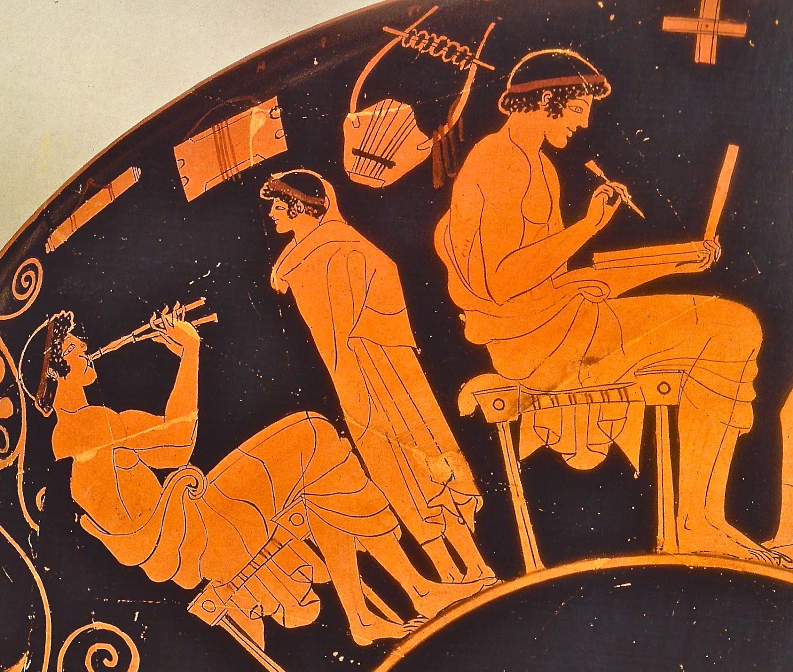
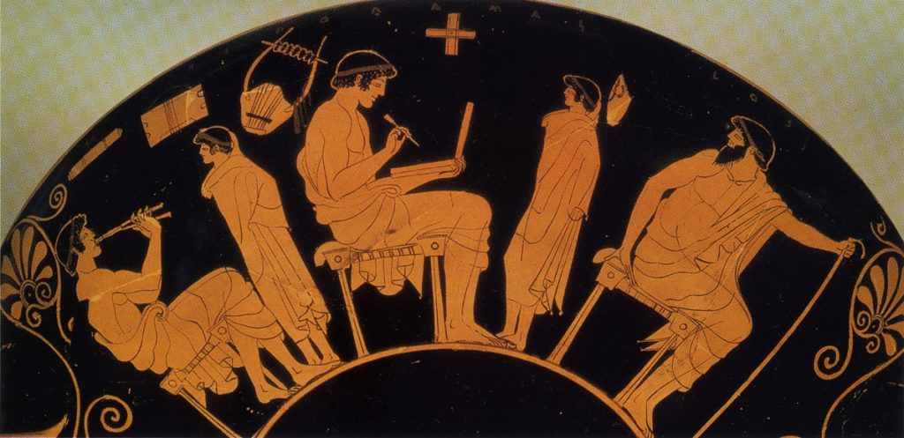
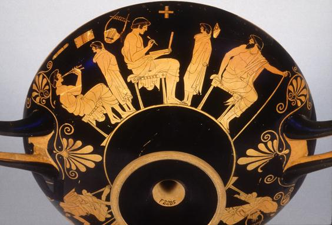

Les Grecs anciens ont inventé le notebook

En cherchant une image qui pourrait convenir pour la couverture de mon Ératosthène, je suis tombé sur un étonant vase de -500/-460 où on voit un jeune homme écrire sur une tablette de cire.
L'homme de Douris, environ -500, Berlin, Staatliche Museen

Vue complète

Vue du vase.